A company best understood through its games
Meadows’ record spans several different ways of participating in the arcade business. It marketed games under its own name, manufactured a table for another developer and marketer, offered products related to existing cocktail tables, and took over selected assets and service responsibilities from Fun Games. These activities belong in the same history, but each leaves a different kind of credit. A cabinet built by Meadows need not have originated in Meadows’ design department. A game Meadows agreed to service need not have received a Meadows production run. The catalog becomes more informative when those distinctions remain visible.
The titles also show a changing program. Early ball-and-paddle tables were followed by bombing and shooting games, a competitive movement game, bowling products, and skill games such as Dead Eye and Gypsy Juggler. Some used hardware later documented through emulator development; others survive principally through promotional and service records. Near the end of the company’s life, the record contains both a surviving Warp Speed prototype and announcements of further products whose commercial fate is unclear. The evidence supports a varied program without requiring every announcement to become a completed release.
The surviving chronology is uneven. An advertisement establishes that a product was being promoted by a particular issue date. A report that shipments are planned establishes an intention. A later report of production is stronger evidence that manufacturing was under way, though it still may not reveal the first shipment. Modern database years are useful finding aids, but cannot resolve every conflict among these kinds of evidence. Meadows’ Gridiron is a particularly consequential example: an early catalog year coexists with forecasts of production and shipping in 1979.
Cabinet production expands
In January 1976, Meadows Games and Meadows Manufacturing announced Wood Craft Inc., a new cabinet factory. Cash Box reported 17,000 square feet under Tom Clark and a combined Meadows plant area of 37,500 square feet, according to vice president Ray Dennison. The announcement tied the facility to the company’s new video-game line. This documents investment in cabinet production alongside game development; it does not establish audited factory output, Wood Craft’s legal ownership or an exact facility opening day.
Flim-Flam and the table-game foundation
Flim-Flam belongs at the beginning of Meadows’ video-game story in 1974. Cash Box’s April 13 issue reported that Pioneer Sales & Services was receiving a favorable initial response to the new Meadows game. Its May 18 issue then explicitly reported shipping. These indexed contemporary reports establish commercial activity by spring 1974, but neither supplies an exact first shipment day. The May column calls the operation “Meadow Manufacturing” and places it in Palo Alto; those printed details should not silently become proof of the company’s formal legal name or a documented address change.
The product’s historical role extends beyond its own initial sale. In August 1976, a contemporary account of Grand Slam IV described a conversion kit for existing Flim-Flam cocktail tables. An operator could replace the board and apply the new label without drilling new holes. The conversion relationship is direct evidence that earlier tables could serve as the physical basis for a later game package. It does not establish how many conversions were sold, how many original tables remained in operation, or whether every Flim-Flam configuration accepted the kit.
Flim-Flam’s sales reputation needs particular care. Secondary histories have repeated large quantities, but the available discussions disagree about their sources and scope. A recalled magazine figure and a production-chart figure need not count the same period or product family. Flim Flam II complicates matters further if a source combined related products. Until the original quantity records are recovered and their headings checked, the company history should describe the unresolved sales evidence rather than choose the most impressive number.
Ted Dabney’s oral-history recollection also calls for precise attribution. In the indexed Smithsonian transcript, he denies designing Flim-Flam. That testimony should remain visible when discussing claims that connect an early Meadows product to a better-known arcade pioneer. It is first-person retrospective evidence, not a contemporary engineering roster. A later arcade-history database names Bob Davis as designer and attributes the concept to Dabney, but it does not resolve the conflict with his denial. Davis remains an attribution lead requiring a supporting record; the name alone does not identify him with other people credited on later games.
Flim-Flam's controls and the social match
The surviving factory manual presents Flim-Flam as a doubles-tennis amusement for two, three, or four simultaneous participants, including groups with different levels of skill. Its paid modes, however, are explicitly two-player and four-player configurations. One quarter selects two-player play; two quarters select the four-player layout. A paddle-size button starts the game and sets its relative difficulty. The distinction explains how three people could participate without requiring a separate three-player software mode: the manual permits three participants but describes only two paid configurations. It does not describe an automatic substitute for an unused fourth paddle.
In the two-player display, a dotted net separates the courts. The ball is served automatically from the center, and the player intercepts it with the paddle. Where the ball contacts the paddle determines its rebound direction. The manual specifically says that striking it with a moving paddle produces no different effect from simply placing the paddle in its path. This matters because a player accustomed to other paddle games might expect motion to add an angle or spin. Flim-Flam instead combines position-based rebounds with a separate speed control: the normal ball speed can be changed to fast after a hit, with a pronounced horizontal shift described in the instructions. That gives the player a deliberate speed tactic alongside the choice of contact point.
Four-player play adds a horizontal dividing line and four paddles, each restricted to its own quadrant. The underlying game sequence otherwise remains the same. An operator can choose an eleven- or fifteen-point ending; the manual recommends fifteen. During attract mode the ball rebounds from the playfield walls, general illumination remains on, and attract lamps flash. The flashing stops during paid play. These details connect the on-screen game to the table's physical presentation: a group could see the demonstration before paying, choose a paddle size when starting, and play a match with a fixed scoring endpoint.
The service instructions also reveal the work required to keep the controls consistent. Each paddle has horizontal and vertical calibration points, and the manual calls for checking paddle alignment on every service visit. Replacement potentiometers or a logic board can require readjustment. This is evidence of the product's operator-facing design, not a measured failure rate. Similarly, the printed one-year PCB warranty and thirty-day monitor warranty describe the offered terms; they do not prove how many repairs Meadows performed. No date on these operating pages establishes the first commercial shipment.
Source: Meadows Games Inc., Flim-Flam manual, PDF pages 3–9, printed pages 1–7. Original scan: https://www.files.stardustarcade.com/PDF_Arcade_Manuals_and_Schematics/Flim-Flam.pdf ; preserved Drive original 15Zx-L9y_u-fuojGvtemlqa6RoPxYcQLQ.
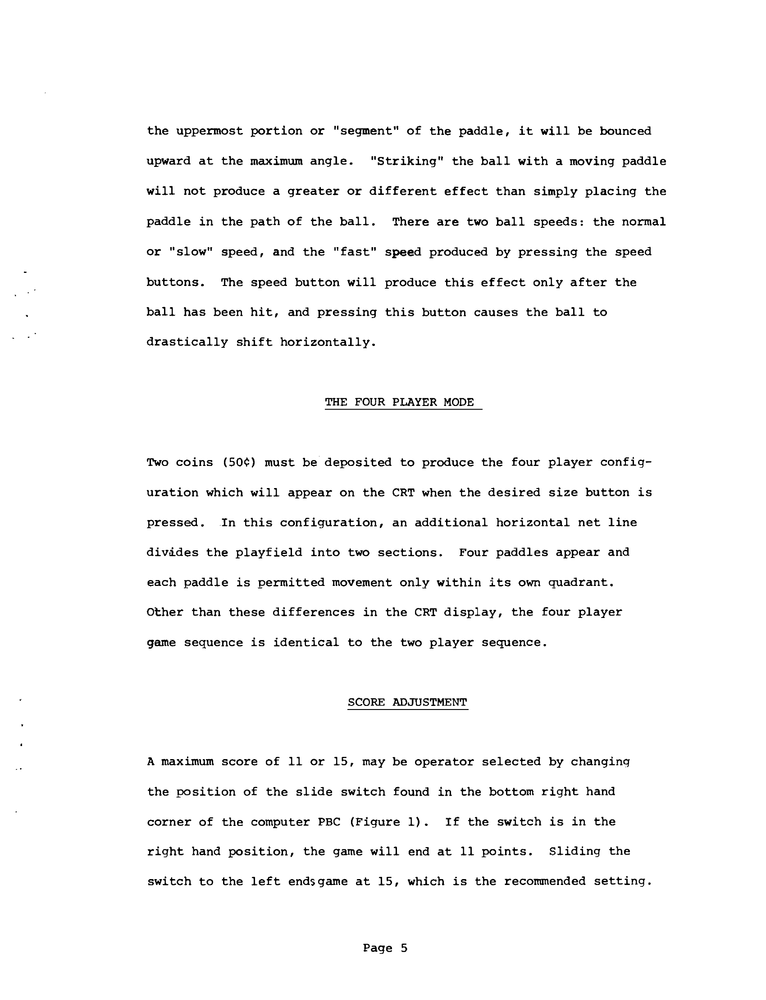
Flim Flam II and the problem of related names
The museum catalog separately identifies Flim Flam II as a 1975 four-player competitive ball-and-paddle product. A separate flyer record helps preserve its identity as a marketed product rather than treating the numeral as incidental spelling. The exact engineering changes, first shipment month and production quantity are not yet established from readable primary documentation.
For catalog purposes, the separate name and promotional record justify keeping an individual entry. They do not justify adding its reported sales to Flim-Flam or treating every related table as a wholly independent design. A useful history can preserve both facts: there was a separately marketed product, and the technical and commercial relationship still requires definition. Surviving boards, instructions and dated operator documents could clarify that relationship more effectively than repeated database listings.
Grand Slam IV: manufacturing for another company
Grand Slam IV provides a clearer example of Meadows’ manufacturing role. Cash Box’s 08/14/1976 article describes Can-Am Entertainment as the marketing arm of Grand Slam Games and identifies Meadows as the exclusive contract manufacturer, according to Can-Am. The table offered tennis, hockey and two knockout choices for different player configurations. The accompanying conversion offering related it to existing Flim-Flam cocktail tables. Those credits place a real Meadows-built product outside a simple list of games developed and sold solely under the Meadows name.
That finding changes the scope of the company history. Grand Slam IV belongs in a role-aware Meadows catalog, even though it is absent from the ordinary Meadows-name baseline. Its presence does not automatically add another original Meadows design. Before establishing a unique output total, its relationship to Meadows 4 In 1 and the later Knock-Out table needs to be reconciled.
A collector’s restoration discussion groups Grand Slam with several Meadows ball-and-paddle boards and reports a panel resembling 4 In 1. That is a useful lead for physical comparison. It cannot replace the period article’s more specific distinction between developer, marketer and contract manufacturer. Nor does a request for potentially compatible boards establish that Ckidzo and Grand Slam IV used identical programs.
Meadows 4 In 1, Knock-Out and Ckidzo
The museum identifies Meadows 4 In 1 with a tennis, hockey and knockout compilation. Cash Box reported in March 1977 that the company’s Knock-Out cocktail table offered the same broad combination: Flim-Flam tennis and hockey, plus knockout singles and doubles. The overlap strongly supports treating these names as a related compilation family. Exact board equivalence, renaming or revision remains unproved.
The preserved Meadows 4-in-1 promotional sheet confirms the four choices and their advertised player counts: Flim Flam Tennis and Flim Flam Hockey each support two or four players; Knockout is labeled one player; Knockout Doubles is labeled four players. The illustrated table places controls around a central screen and presents the machine in a social setting. This is promotional artwork, rather than a photograph documenting a surviving cabinet.
Its instructions make paddle-size selection the action that starts the game. After striking the ball, the player can use a speed button to change its speed and direction. The sheet also advertises extended time for a high score in Knockout and lists quarter-dollar singles and half-dollar doubles pricing. These are documented advertised settings, not proof that every operator used the same prices. The sheet carries Meadows Games Inc. and Sunnyvale, California, but no visible printed date. It strengthens the compilation-family comparison without proving that Knock-Out, Grand Slam IV and 4-in-1 had identical boards or programs.
The March report also describes international demand following exposure at the London ATE convention. That is contemporary evidence of promotion beyond the domestic market. The account does not give a verified shipment quantity or establish a separate foreign program version. Marketing claims about acceptance and demand must remain attributed to their period reporting rather than converted into a measured commercial result.
Ckidzo has a more specific documented history than its catalog year suggests. Cash Box mentioned the new game in October 1975, while its January 31, 1976 product report described a released two- or four-player cocktail game. Its paddles moved in multiple directions with a built-in inertia effect and speed buttons. An adjustable timer provided two-, four- or eight-minute games; visual shading warned players that time was running out. These dates distinguish an early trade mention from a later explicit release report, rather than establishing an exact first shipment day.
In April 1976, Cash Box reported a free eight-capacitor conversion kit that replaced inertia movement with direct action. Meadows attributed the change to location surveys finding the original game too demanding and said future production would use direct control, apart from limited remaining inertia models. This is a documented revision within Ckidzo, not proof that it became another named compilation. A located manual and flyer remain identity leads whose contents have not yet been visually verified. The existing record therefore does not resolve whether Ckidzo supplied hardware, game elements or an earlier configuration for any of the compilation tables. The connection remains a question, not a reason to erase Ckidzo’s entry or merge it into Grand Slam IV.
A January 1978 Cash Box column supplies another caution about the compilation chronology. Lila Zinter described the 4-in-1 table as entering its fourth production year, with its domestic run largely complete but overseas prospects remaining. That statement does not neatly align with a simple 1976 first-release date. It could refer to a broader table lineage, but the source does not say so. The production-year claim remains attributed rather than being converted into a new exact release year. The same column reports plans for a consumer-market product in 1978, without naming a finished game or confirming a retail release.
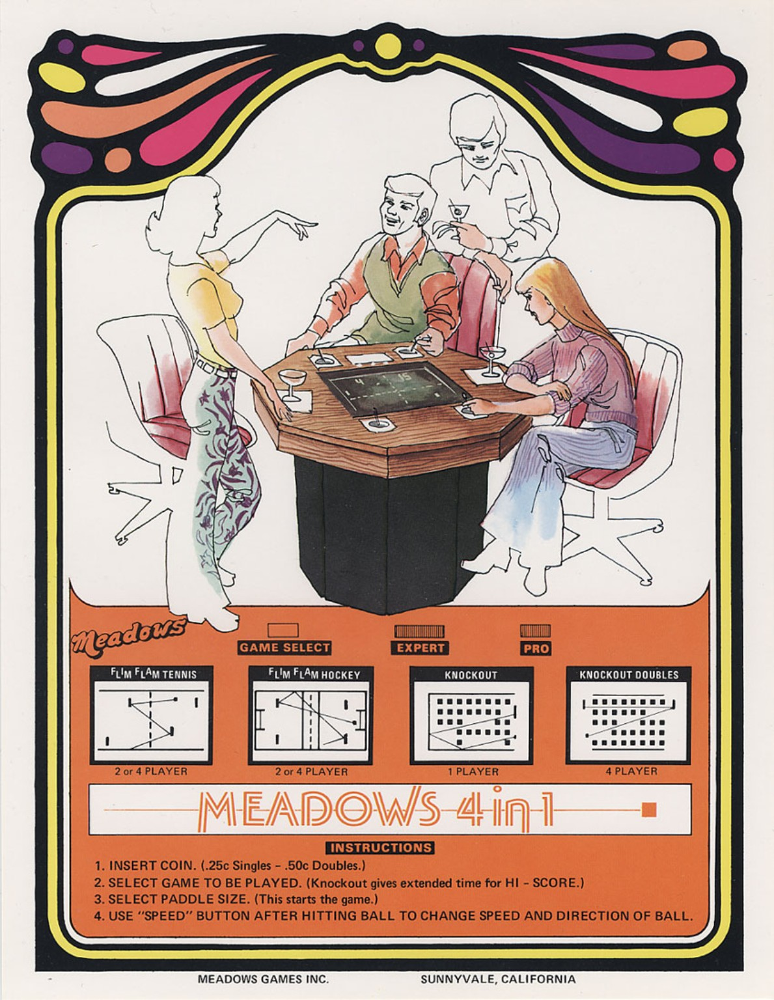
Choices, timing and awards on the M-4
The original Meadows 4 In 1 manual identifies the product as Model M-4 and gives a more precise account of the customer's choices. A quarter buys two-player tennis, two-player hockey or single-player Knock Out. Two quarters permit four-player tennis, hockey or Knock Out. This documents the pricing and participant structure of the manual's version; it is not a universal claim about every operator's coin settings or every later cabinet sold under a related name.
In attract mode, the display cycles between games while the ball rebounds within the playfield. Inserting a coin stops the automatic selection sequence. Players then use the game-select button to choose a game and the paddle-size button, marked Expert or Pro, to begin. Together with the supplied flyer, these instructions show that selecting difficulty and starting play were part of the same interaction.
The manual distinguishes the games' endings. Tennis ends when a player reaches eleven points. Hockey and Knock Out use a visible time indicator, with operator choices of approximately 1.1, 2.2 or 4.4 minutes. The single-player Knock Out reward also needs a qualification: when the threshold is reached and time expires, the score briefly remains, then clears and the player can select any of the one-coin game types. Only one such reward is available per inserted coin. Operator thresholds are 100, 200, 300 or 400 points.
That wording is more specific than the flyer's general promise of extended time. It preserves a useful documented difference without deciding whether the flyer describes a later program revision or simply summarizes the reward loosely. Matching titles and similar advertising cannot settle board equivalence. This manual supplies no explicit Grand Slam IV or Ckidzo identity, so the previously unresolved manufacturing and compilation relationships remain open.
The service instructions describe joystick potentiometers and separate adjustment procedures for two- and four-player controls. They document analog paddle-position controls rather than merely a count of external sticks. This helps interpret what should be checked on a surviving table: a replacement control or a poorly adjusted potentiometer can affect the play experience without creating a new game title. The manual establishes that calibration was part of Meadows' servicing procedure; it does not diagnose any particular surviving machine.
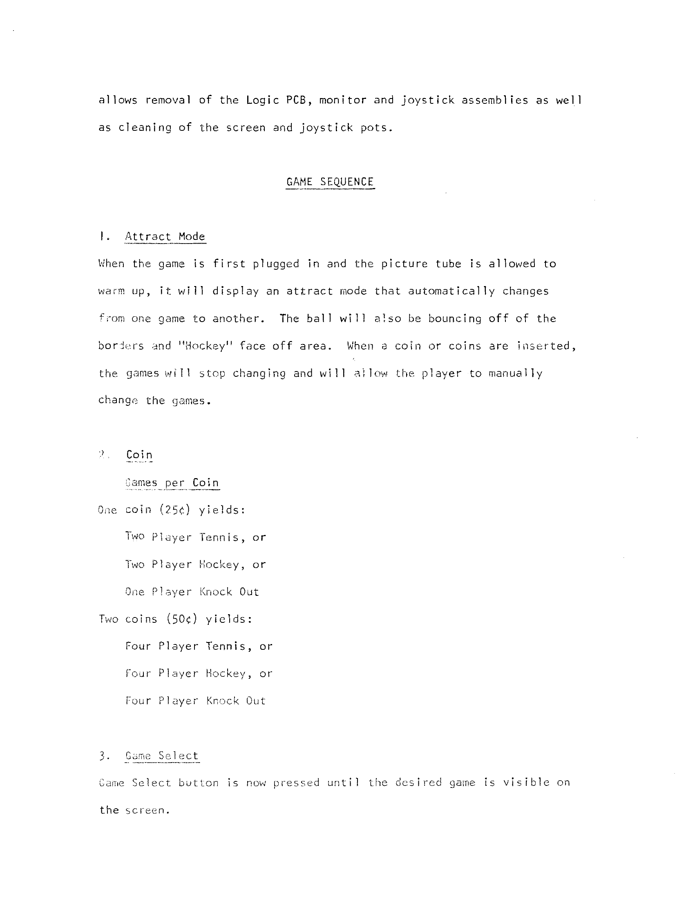
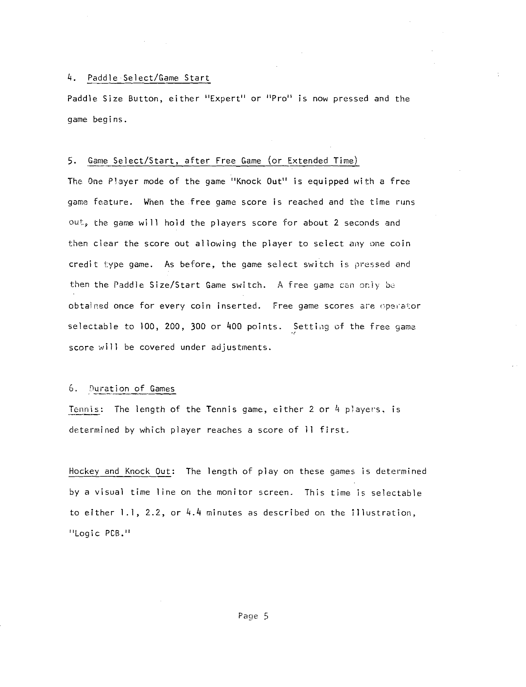
Selected Fun Games assets, not a merger
In March 1977, Play Meter reported that Meadows was acquiring selected assets from Fun Games. The report named Take 7 and support for earlier Fun Games products, together with movement of some employees into Meadows. Its wording explicitly distinguished the arrangement from a merger and said Meadows would not assume Fun Games’ liabilities. A July follow-up reported that certain assets had been acquired when Fun Games ceased operating. Together, these accounts establish a transaction and its broad character without fixing the precise closing day.
Take 7 consequently belongs in the associated-product record with an acquisition and service role. That is different from crediting Meadows with its original development. It is also different from establishing a later Meadows manufacturing run. The promise to support earlier Fun Games products cannot be turned into a claim that the entire Fun Games catalog became Meadows releases.
The transaction matters because it expanded what Meadows was responsible for in the arcade market. An operator seeking support might encounter Meadows through a machine originally supplied by Fun Games. The commercial connection is historically meaningful even where a unique Meadows-original game count does not change. The 1977 asset purchase must also be kept separate from Holosonics’ acquisition of Meadows itself in 1978.
Drop Zone 4 and Bombs Away
Drop Zone 4 is documented as a recently introduced single-player bombing game in the August 1975 issue of Play Meter. An aircraft passes over moving target areas, and the player chooses when to release a bomb. Because both the plane and targets move, the challenge lies in judging their relative positions rather than steering the aircraft freely around a field. The magazine describes increasing speed as the score rises. This is direct period evidence of the game’s basic structure and introduction by that issue.
The same article describes different target values and the possibility of a free game for either a high score or no score at all. Those rules matter to the relationship with Bombs Away because modern descriptions of the later game contain similar details. Their appearance in the earlier Drop Zone report means that shared scoring or speed rules cannot alone establish a renamed product. They may reflect continuity between related designs; they do not settle the exact hardware or release relationship.
Bombs Away was explicitly reported as a new release in production in Cash Box on January 31, 1976, earlier than some later February listings. The article describes a single-player upright with fifteen bombs per paid game, ship-hit explosions, miss splashes and colored monitor overlays. It supplies contemporary support for production and the display treatment, while its free-game scoring overlaps the earlier Drop Zone 4 report. The museum describes it as a sequel to Drop Zone 4; exact hardware continuity remains unresolved. Its basic premise is a bomber attempting to hit ships, with the bomb-release button supplying the player’s timing decision. The museum describes a monochrome monitor with a color overlay. That is a distinction between the image generated electronically and the colors supplied by material over the screen. A colorful appearance does not, by itself, establish native color-video hardware.
A Japanese connection also deserves preservation. Arcade History cites a Japanese game-list publication for a November 1976 Taito release of Bombs Away. This remains a secondary-supported regional lead until contemporary Japanese promotion or equivalent primary evidence is recovered. Even if confirmed, a regional publishing credit would not automatically create a second unique Meadows game. It would instead add the territory and partner to the existing title’s history.
The 1982 Game Machine retrospective separately names a Drop Zone cocktail and Drop Zone Bomber. These labels could illuminate cabinet formats, market naming or product revisions, but the present evidence does not resolve which interpretation is correct. The word “Bomber” in Play Meter’s 1975 headline is descriptive and cannot serve as proof that the article’s Drop Zone 4 was formally sold under the exact retrospective name. The catalog retains the unresolved names without inflating the output total.
Cobra Gunship and development attribution
Cobra Gunship took Meadows into a different form of shooting game. Play Meter’s July 1976 description has the player align a target in a gunsight while climbing or diving. Going too far produces a momentary crash indication, though the account says the crash itself has no penalty. Targets become faster at successive score thresholds. The documented version uses an operator-set allowance of missed shots to determine the game’s length and provides sequential turns for two players.
That misses-based account is important because a later annotated information sheet in the recovered game research describes timed play. The two records should not be collapsed into one supposedly universal set of rules. They could reflect a revision or another production configuration, but the present evidence cannot specify the change. Describing the contemporary July account and retaining the conflicting sheet gives a more useful record than choosing whichever rule is easier to summarize.
The development credit requires similar care. Ted Dabney’s Smithsonian oral-history transcript contains his denial that he developed Cobra Gunship, while acknowledging substantial assistance to its developer. The distinction is consequential: help on a project does not make someone its sole designer. A history that automatically assigns the game to Dabney would obscure the engineering work of the person he assisted.
C.W. Hicks’ professional history supplies a complementary lead. His Dark Star Studios pages group Cobra Gunship with several Meadows projects and describe engineering, programming and hardware/software work. They support identifying Hicks as a principal technical participant, but their retrospective dates conflict with some catalog years. They should therefore contribute to attribution without becoming a universal release-date authority. The employment range extending beyond the best-supported Meadows closure year does not prove that the game company continued operating through that later date.
Targeted technical analysis also exists for Cobra Gunship, but diagnostic visualizations are not historical game screenshots. Their purpose is to investigate program or graphics questions, and they must remain distinct from authentic cabinet, screen and flyer evidence. The company manuscript carries forward the attribution correction and rule conflict without presenting those diagnostic images as publication illustrations.
Lazer Command: introduction and revision
Lazer Command is a two-player combat game described in the museum record as involving movement, firing and tank changes. The recovered LC-1 service manual supplies direct evidence for its controls and rules. A flashing-character effect discussed by a museum contributor in relation to emulation is not enough to establish that every original machine behaved that way. Emulated observations need comparison with original documentation or surviving hardware before becoming claims about production games.
Contemporary reporting does establish a revision sequence. Cash Box in March 1977 says the game had been introduced at the 1976 AMOA convention and that the current model had a substantially changed cabinet and simplified operation. That is stronger evidence than choosing either 1976 or 1977 from a retrospective list and assuming the other year is wrong. Introduction, engineering work and a later revision can occupy different dates in one product’s history.
The same report attributes stepped-up production and back orders to Meadows’ marketing chief. Those statements show how the company presented the revised game to the trade, but are not audited production or sales figures. A narrative can report contemporary claims of demand while leaving their scale unknown. The useful historical finding is the documented change in the product, not an invented commercial total.
Lazer Command's driver and operator settings
The original LC-1 manual defines the contest as a battle between two groups of fifteen tanks. Each player can move and fire only the tank occupied by that player's driver. Pressing Eject while moving the control handle releases the driver; the button need only be held long enough to leave the tank. The driver then enters another friendly tank by moving into it, including after the previous tank has been destroyed. Enemy tanks cannot be commandeered. This makes the fleet a collection of available positions and vehicles rather than fifteen simultaneously moving units. The manual explicitly presents switching tanks as a strategic option, though it does not prescribe a winning route or establish what tactics players actually preferred.
The Novice and Expert start buttons generate a simple or complex maze and begin play. Movement is through a four-way control handle. The screen displays remaining time at the upper left, credit information near the upper center, and the number of enemy tanks destroyed in the lower corners. Play ends when one side loses every tank or the timer expires. The side with more enemy tanks destroyed receives the winner indication; equal totals produce a draw. Thus a timed game need not end with the complete elimination described as its overall objective.
The operator could set the price to one or two quarters per play and the duration to one, one and a half, two, or three minutes. These adjustments gave a location a choice of price and playing time while leaving maze difficulty to the players at the start. The service text identifies separate eject switches, Novice and Expert switches, four-way handles, speaker and instruction-card plexiglass accessible through the control panel. This independently anchors the unusual driver mechanic in the cabinet's controls. It supplements the earlier introduction and revision evidence without dating a particular software revision or proving that every surviving board has identical behavior.
Source: Meadows Games, Lazer Command model LC-1 manual, PDF pages 4–6 and 11, printed pages 1–3 and 8. Original scan: https://www.files.stardustarcade.com/PDF_Arcade_Manuals_and_Schematics/Meadows%20Lazer%20Command%20.pdf ; preserved Drive original 18cttVub37ahj7lISEOFh0gQdS0t-m2dc.
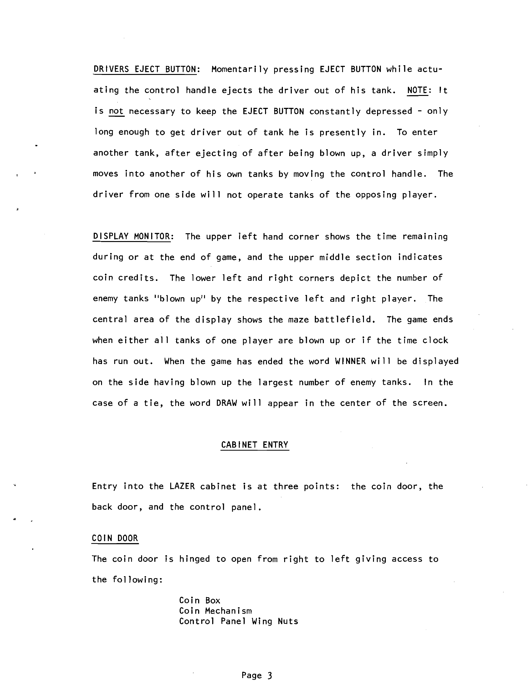
Bigfoot Bonkers
Bigfoot Bonkers is cataloged as a 1976 competitive movement and collision-avoidance game. Its museum description emphasizes obstacles and directional buttons rather than the paddle controls associated with the early tables. It consequently belongs in the account of Meadows’ expanding game program, while named development credit and an exact introduction month still require stronger primary evidence.
The museum also reports that inserting credit starts play without a separate start button or title screen. That claim remains attributed to the secondary machine record. It is a useful preservation caution: a title label shown in a modern emulator interface is not necessarily an original title-screen artifact. Controls, start behavior and actual screen content should be checked independently rather than inferred from a modern frontend.
A surviving-machine account at Atomic Buffalo Arcade complicates the familiar two-player-only description. The owner reports selecting either one or two players after inserting a credit, using the right joystick for solo play. In that mode, the opponent initially mirrors the player's movements; obstacles cause the paths to diverge. The same account reports a PCB switch that reduces attract-mode sounds, contradicting descriptions of those sounds as unadjustable.
These are first-hand observations about the owner's machine, rather than proof that every cabinet or board revision had identical behavior. They nevertheless make a blanket two-player-only claim unsafe. The owner also reports that the solo behavior was not working in the emulator version they used. That statement is historical testimony, not a verified assessment of the current MAME release. An original manual, board-switch inspection and dated emulator comparison would settle the scope of the differences.
Two bowling games
Meadows Lanes and 3-D Bowling should remain separate entries. The distinction no longer rests only on two modern catalog records: Play Meter’s February 1978 article explicitly introduces 3-D Bowling as another bowling game after Meadows Lanes. Separate promotional records and emulator configurations reinforce the need to investigate their relationship as successive products rather than flatten both into a single name.
The museum describes Meadows Lanes as an alternating-player bowling game with lateral aiming and fast or slow throw choices. Its catalog year is 1977, while Hicks’ work history gives an earlier project date. That discrepancy can remain visible without inventing a reissue. Development could precede introduction, but the existing record does not prove that this is the explanation in this particular case.
The February 1978 account of 3-D Bowling describes regulation scoring and player choices of ball speed and hook, together with a random beer frame and a step for shorter players. Its “three-dimension” language is promotional description; it must not be mistaken for evidence of a stereoscopic display. Earlier show coverage moves its public presence into 1977: Play Meter’s December AMOA account names 3-D Bowling alongside Inferno. A November Cash Box report also announced both games for display. These establish a 1977 promotional/show history, preceding the February feature and the March date in Game Machine’s later retrospective. They do not by themselves prove commercial shipments in 1977.
Meadows Lanes: positioning, pace, and the single hook
The Meadows Lanes instruction manual identifies the machine as model ML-1. Its operating description makes the bowler's decisions unusually clear: the player positions the bowler within the gutters, chooses a fast or slow delivery, and can hook the ball left or right once during each delivery. The restriction to one hook is significant. Positioning, speed, and a single course correction form the game's sequence of decisions. The machine uses conventional bowling scoring, displays player one's score on the left and player two's on the right, and identifies the higher score as the winner. A tied result is displayed across the lane.
Operators could charge either one or two quarters per player. They could also allow unlimited time to bowl each ball or impose a three- or five-second limit. Those short intervals govern the decision to deliver the ball, not the duration of a complete bowling game. The manual says the displayed instructions reflect the operator's settings; pressing Start clears the instructions and begins play. Together these details show how Meadows packaged a familiar sport for coin-operated use: recognizable scoring helped explain the objective, while the price and delivery timer let an operator adjust the pace of play. They do not establish a release date or prove that Meadows Lanes and the later 3-D Bowling used identical hardware.
Source: Meadows Games, Meadows Lanes, model ML-1 instruction manual, PDF pages 4–6 (printed pages 1–3), preserved original scan hosted by Stardust Arcade. https://www.files.stardustarcade.com/PDF_Arcade_Manuals_and_Schematics/Meadows%20Lane.pdf
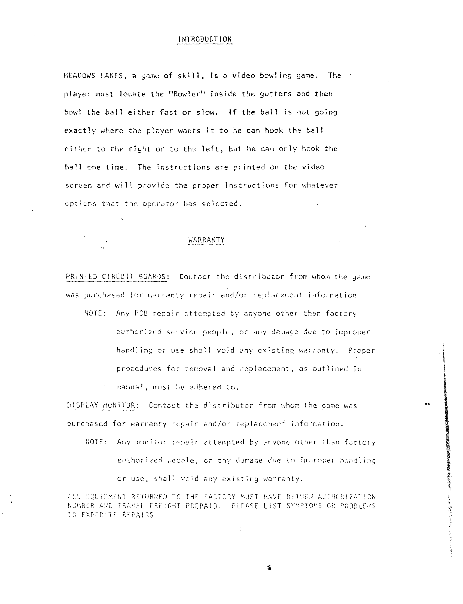
3-D Bowling's surviving board module
The preserved partial schematic set documents a modular electronic assembly rather than a complete operating manual. Its three surviving sheets cover universal game logic, moving-character generation, and the physical logic-board module. The module drawing lists a main logic board, memory/PROM board, sound board, moving-character board and motherboard, alongside a capacitor. It illustrates the cards standing in the assembly and says that their sequence is a manufacturer's recommendation: the boards can work in another order. That is useful evidence for the construction of the documented version, although it does not establish how many machines were built or whether every production revision used the same boards.
The module drawing carries a 02/03/1978 date, while the moving-character schematic has an earlier drawing entry and subsequent checking and approval entries. These are engineering-document dates, not first-sale dates. The moving-character drawing's drafter field names R. Davis; that is a drawing credit and should not be silently promoted to sole game-design or programming authorship. The distinction is especially important for Meadows, whose personnel and invention attributions elsewhere already require careful separation. Because the source is explicitly partial, it cannot settle the complete machine's controls, optical arrangement, software revision history or relationship to Meadows Lanes by itself.
Source: Meadows Games Inc., partial 3-D Bowling schematics, all three surviving PDF pages visually inspected. Original: https://www.files.stardustarcade.com/PDF_Arcade_Manuals_and_Schematics/Meadows%203-D%20Bowling%20Schematics%20%28partial%29.pdf ; preserved Drive original 1HovjQRTmyJ-8f16Uf48UkFeOnN_yusfj.
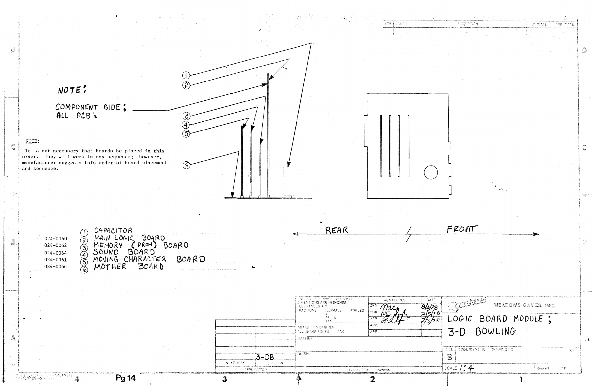
Inferno: firefighting and coordinated controls
Inferno places firefighting at the center of the game. The museum describes coordinating a fire truck across the bottom of the screen and firefighters on vertical ladders. It is the Meadows title, distinct from the later Williams game with the same name. Play Meter’s December 1977 AMOA report already describes Inferno and its randomly appearing fires. This supports show presence before the familiar 1978 catalog year. A February 1978 Cash Box report says Meadows had begun another production run after its marketing director returned from London’s ATE show. This establishes reported production activity by early February without supplying an exact first shipment date.
The manufacturer's service/instruction manual, now checked against a recovered original scan, makes Inferno's coordination problem clearer. Vertical joystick movement positions the firefighter on the ladder; horizontal movement positions the truck below. The playfield presents three fires and a waving person. Extinguishing a fire first earns 100 points, while accidentally spraying the person costs 25. Clearing the fires produces another randomized arrangement.
Solo play permits either joystick, then locks out the unused control. Operators can choose 60, 90, 120 or 180 seconds and offer score-based extended play, which cannot itself earn another extension. The manual also documents an optional attract siren lasting four seconds every two minutes and separately adjustable sounds. These are documented manual rules, not an independently tested cabinet. The printed manual contradicts itself about which side is green or yellow, so precise side-to-color assignment remains withheld pending surviving-machine verification. The operating text does not supply a verified release date.
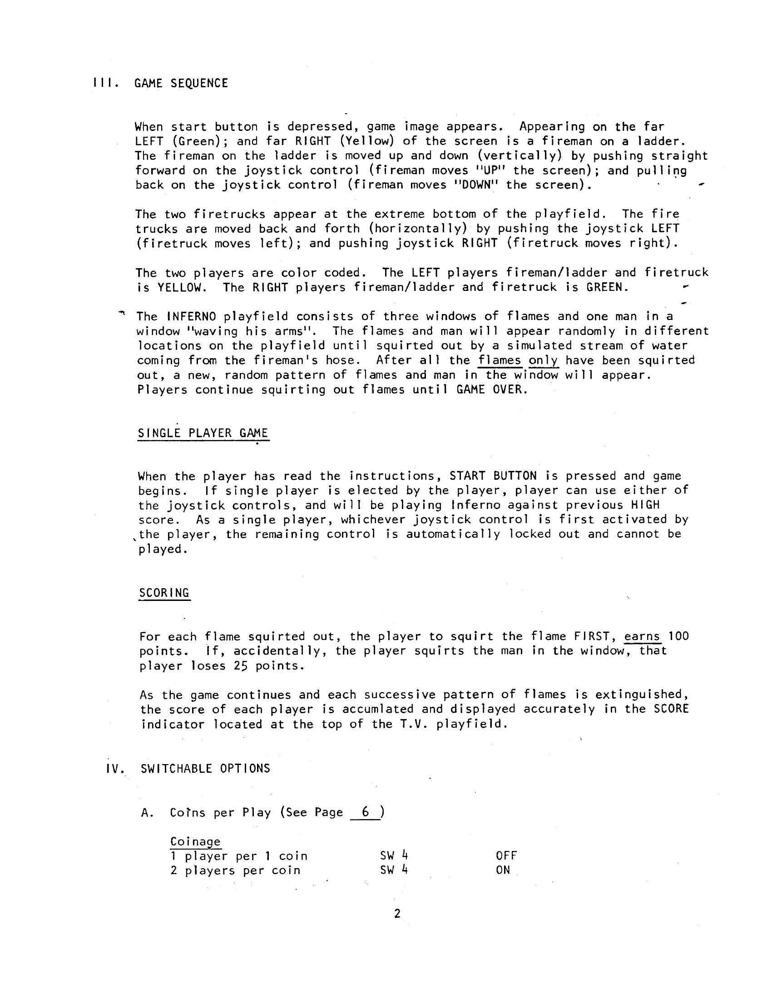
Inferno's surviving service record
The recovered twelve-page service-manual scan confirms the controls, scoring and operator settings described above. Its printed gameplay page actually contradicts itself about the players' green and yellow sides; this is an inconsistency in the original document, rather than merely faulty OCR. The exact side assignment remains open. The cover clearly gives Meadows Games, Inc., 181 Commercial Street, Sunnyvale, California 94086.
The sound-board drawing identifies separate left and right volume controls. It supplies physical documentation for a dedicated audio assembly, complementing the written descriptions of sirens, ladder movement and water effects. The logic schematic labels a 2650 microprocessor, character generator, RAM and program memory. This is direct manufacturer documentation of the digital hardware; a circuit drawing does not establish the audible accuracy of an emulator or the manufacture date of every board.
The scan also preserves drawings with handwritten dates. A general coin-acceptor assembly drawing carries 12/21/1976, while the Inferno logic-sound harness appears dated 11/29/1977. The older coin-mechanism drawing must not be used to move Inferno's release into 1976: a reusable component can predate the game containing it. The game-specific harness supports late-1977 engineering documentation, consistent with the already recovered show reports, but still does not prove the first commercial shipment day.
This is a surviving twelve-page scan, not a certified complete factory manual. Its contents page lists joystick servicing and a Motorola service section that are not present as complete sections in this file. Those omissions and the faint parts of the drawings are recorded for future preservation work. The original PDF and selected readable page images have been preserved with their source and captions.
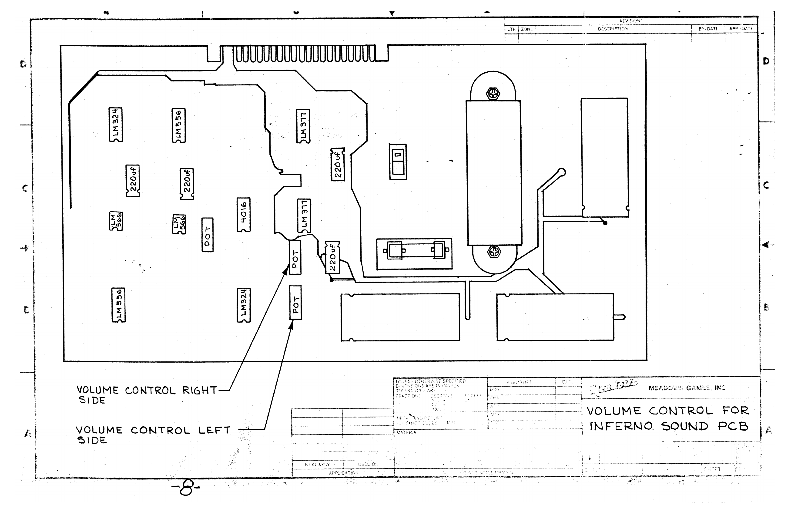
Gypsy Juggler: eggs, turns and music
Gypsy Juggler changes the player’s task from combat or bowling to keeping eggs in motion. Cash Box reported its introduction in June 1978 and described an add-egg control, a maximum of four eggs, rewards increasing with the number being juggled, and operator-adjustable misses. The account presents it as score competition for one to four participants. Those words do not establish simultaneous four-player control of a single juggler.
The hardware record helps explain why its colorful appearance needs care. MAME’s Meadows source models monochrome video and external artwork for this family. That is evidence about emulator implementation, not a complete physical history of every production cabinet. It does, however, prevent treating an unqualified database color field as proof of native color electronics. Original overlays, monitor records and service diagrams are the relevant evidence for settling the display question.
The recovered Gypsy Juggler service manual carries May 1978 on its operating pages. That is a directly printed documentary date, unlike an archive upload date or a modern database's assigned year. It places the instructions before the June trade report already recovered. It does not establish the first day a production machine reached a customer, but it materially strengthens the chronology of the product's preparation and public introduction.
The manual also resolves the meaning of its one-to-four-player promotion. Participants register for the game using the Players button, and their score positions appear in succession. Player one's flashing score identifies whose turn is active. Dropping an egg reduces the remaining misses and brings up the next-player message. This is alternating score competition through one juggler, rather than four people simultaneously controlling different jugglers. The distinction changes how the cabinet should be described without changing the number of games in the company catalog.
Players move the juggler left and right, position him beneath the chute and press Add Another Egg to introduce each egg. A successful hand-to-hand exchange earns five points with one egg, fifty with two, one hundred with three and two hundred with four. Bouncing an egg from the juggler's head earns nothing. The steep rise in scoring provides a documented reason to accept the harder task of juggling additional eggs. It is an interpretation of the stated scoring schedule, not evidence that every player preferred the harder setting.
The missed-egg animation is unusually playful: the broken egg releases a chicken, which moves off the screen with a peeping sound. The egg remains visible until another egg begins the next juggling sequence. Operators choose between two and nine misses. Optional extended play grants one additional miss at a selected score of 5,000, 15,000 or 35,000 points. Thus the operator can change the length and reward structure without changing the basic task.
The manual identifies the musical material as well. Optional attract music uses a roughly twenty-second chorus of Thunder and Blazes, also identified there as Entry of the Gladiators, approximately every four minutes. Another short musical passage uses The Volga Boatmen during the instruction sequence. The game's documentation describes separate control over musical and gameplay volume. Those details belong to the written factory design; they do not certify that the presently emulated sound is identical to an original working cabinet.
Its free-play setting has an explicitly stated showroom and trade-show purpose. It supplies four credits, all of which must be played before the machine returns to attract mode. The manual also lists a slide-out step, an external power switch, a daily high-score display and automatic ROM/RAM checking. Together these details show Meadows attending to demonstration, different players' reach and operator servicing alongside the scoring design. They are manufacturer specifications, rather than independent measurements of reliability or commercial success.
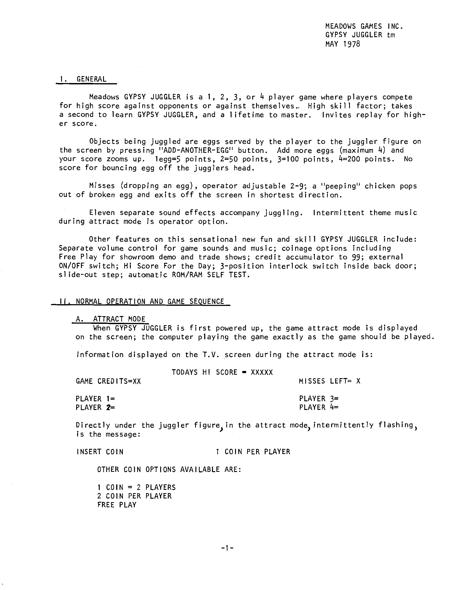
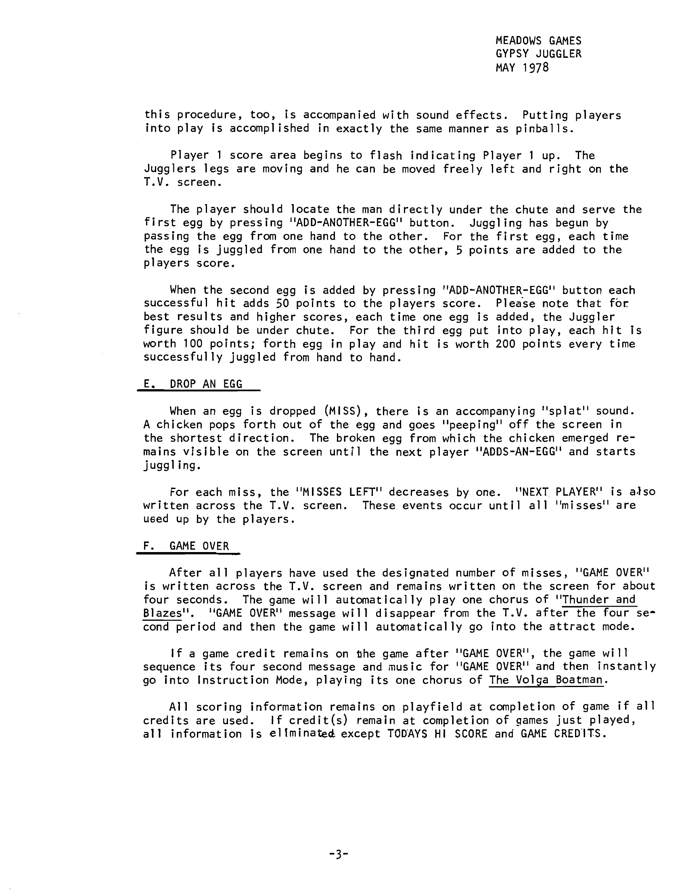
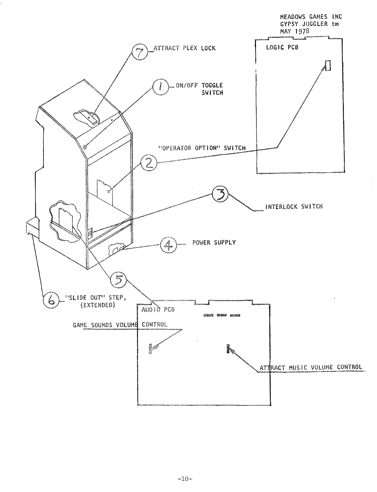
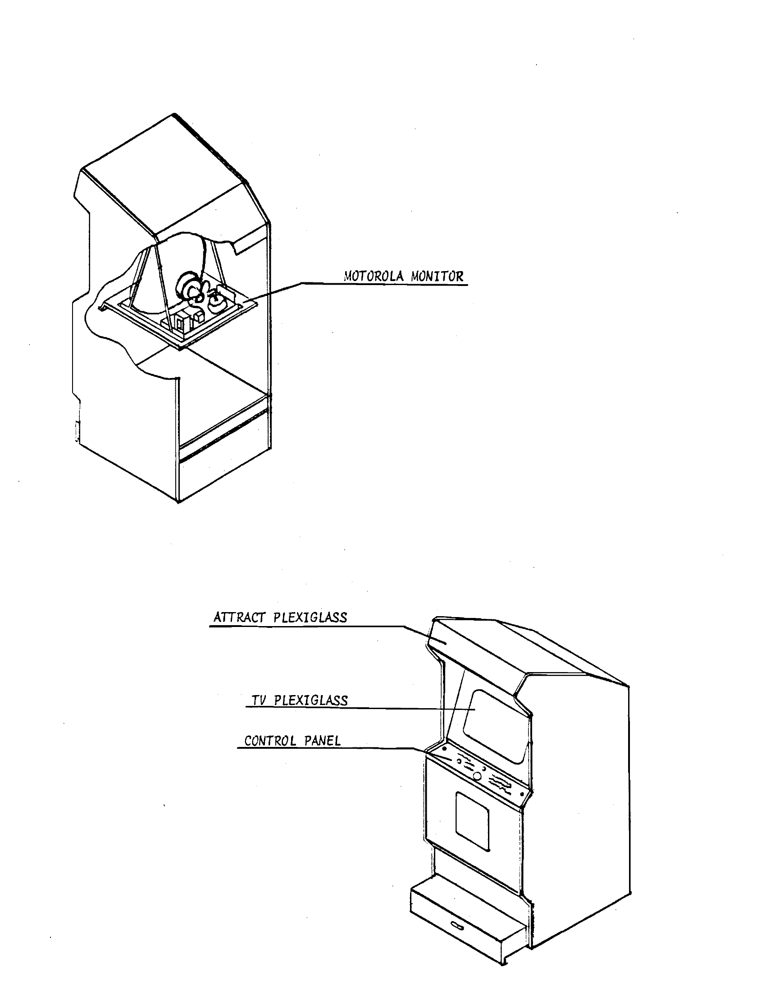
Dead Eye and the late skill-game program
Dead Eye is documented in late 1978 trade coverage as a score game built around shooting a tossed coin. An October report announced availability at the end of the month, while an indexed December report said it was in full production. These are different milestones: the first is an availability announcement, the second a production statement. Neither supplies a verified first-shipment day.
The sequence also shows why a September forecast should not control the final release date. Plans can change, and later reports may describe a different stage of the product. Keeping forecasts, announcements and production evidence in order gives the reader the strongest account available without turning intent into an accomplished event.
Dead Eye, Gypsy Juggler, 3-D Bowling and Inferno are grouped in MAME’s Meadows source around Signetics S2650 hardware. The inspected common configuration uses separate main and audio processors, while Inferno has its own differences and unfinished audio implementation. This documents a related technical family without proving identical boards, identical sound hardware or a single shared development story for all four games.
What the operator could change
The recovered instructions reveal a recurring Meadows design concern: the customer’s game and the operator’s settings worked together. Flim-Flam allowed a choice of paddle size at the start, while the operator selected an eleven- or fifteen-point ending. The M-4 compilation offered several kinds of play through one table, but used different endpoints for them. Tennis ended on points; hockey and Knock Out ran against time. Lazer Command combined a player’s choice of maze complexity with an operator’s choice of match duration. These were different approaches to making a location’s machine accommodate both customers and the business running it.
The prices also depended on the product. Flim-Flam’s documented quarter and half-dollar modes changed the number of paddles in the display. The M-4 used the same amounts to distinguish its one-coin and two-coin configurations. Lazer Command’s one- or two-quarter setting changed the price of a contest rather than the number of tanks. Meadows Lanes charged one or two quarters per player, while its short timer concerned how quickly a bowler had to deliver each ball. Treating all of these as a generic “coin setting” would hide meaningful differences in what a customer received. The manuals describe the available arrangements; they do not tell us which setting predominated at actual locations.
The distinction between simultaneous and alternating participation is equally useful. Flim-Flam put four paddles into quadrants for a group playing together. Gypsy Juggler registered up to four score positions but passed the single juggler from one turn to the next after a miss. A four-player label therefore meant different experiences across the catalog. The compilation flyer’s participant counts must likewise be read game by game: its solo Knockout and four-player Knockout Doubles were choices within one host product. Those differences explain the machines more precisely than a single maximum-player number.
Reward settings show another variation. Gypsy Juggler’s optional extension added a miss at a selected score. Inferno’s score-based extension added playing time, with a rule preventing the extension from earning another extension. The M-4 instructions instead let a qualifying solo player select another one-coin game after the timed round. Its flyer summarized the incentive as extended time. Keeping the factory wording visible lets the reader understand both the advertised promise and the documented operation without inventing an intervening revision. A reward’s name alone is insufficient to determine its mechanics.
The documentation also preserves how Meadows expected machines to attract attention before a customer paid. Flim-Flam combined a bouncing-ball demonstration with flashing lamps. Inferno offered a short, periodically sounding siren. Gypsy Juggler used optional circus music and a separate instruction passage, and its manual described a free-play setting for showrooms and trade shows. These are specific mechanisms for demonstrating the product. They establish what the manufacturer documented, while leaving the effectiveness of those demonstrations and their actual use at individual locations unknown.
Service evidence adds a physical layer to this picture. The paddle tables required potentiometer calibration; their on-screen boundaries depended on the controls being adjusted correctly. Lazer Command’s four-way handles and separate eject switches embodied a different control scheme. Gypsy Juggler’s cabinet drawing placed operator switches, audio adjustments and the slide-out step within an identifiable assembly. The partial 3-D Bowling drawings show distinct boards arranged on a motherboard. Together these sources connect rules to controls and electronics without suggesting that the whole catalog used one universal board or cabinet.
This operator-facing record helps explain Meadows’ range without relying on unsupported sales superlatives. The company supplied social tables, timed combat, bowling decisions, coordination tasks and score-based juggling. Some decisions belonged to players, others to operators; some games ended on points, others on time or misses. Contract manufacture, conversions and acquired service responsibilities extended the company’s involvement beyond its own branded releases. The surviving evidence is therefore strongest when each product is described in terms of the experience it offered and the role Meadows actually held.
Source basis: the visually inspected Meadows factory manuals and flyer documented in the Flim-Flam, M-4, Lazer Command, Meadows Lanes, Inferno, Gypsy Juggler and 3-D Bowling sections. This section compares their stated features; it makes no measured sales, revenue or reliability claim.
Holosonics and a changing direction
Cash Box reported that Holosonics acquired Meadows effective 09/01/1978 and that Paul C. Jacobs became president on 09/15. Harry Kurek exchanged the company for cash and Holosonics shares and departed. The report retained sales and purchasing personnel and linked the acquisition to plans involving holography. These details explain a change in control and a proposed technical direction; they do not establish that a holographic arcade product was finished or shipped.
The reporting also discussed planned Dead Eye shipments and production. Its forecasts belong alongside the later October and December evidence rather than replacing them. A takeover announcement commonly combines completed corporate events with intentions for future products. The acquisition’s effective date is evidence of the former; proposed demonstrations and production schedules remain evidence of the latter.
By March 1979, the management situation had changed again. Cash Box reported Jacobs’ resignation and the departure of three staff members. Bill Cravens became temporary president, and the article described a desire to reorganize the company around products. The account supports a real management transition but does not authorize a more dramatic explanation of financial or legal events than the reporting supplies.
Gridiron, The Driver and Warp Speed
Gridiron’s chronology is unresolved. The museum gives an earlier catalog year, while a December 1978 report forecasts production for 01/15/1979. In March 1979, Cravens still described shipments as something that would begin within weeks. Those reports are consequential evidence of the late program, but neither confirms that deliveries started when planned. An earlier release followed by revision or renewed production is possible; an erroneous early date is also possible. Neither explanation has enough evidence to become the final narrative.
A Meadows football advertisement in Play Meter's 02/15/1979 issue provides a fuller picture of the late football program. The inspected text describes one- or two-player play, a computer opponent, running, passing and kicking, eight play choices, and trackball controls. It also promotes coin accumulation for extended play. Those features suggest a contest involving both play selection and direct control, rather than a single-button sports attraction. The advertisement's graphic title has not been visually verified, so its identification with Gridiron remains strongly suggested by the company and subject, rather than independently established from the title artwork.
The distinction does not diminish what the advertisement documents: Meadows was promoting a specific football experience in February 1979, between the earlier production forecast and the March statement that shipments would begin within weeks. Advertising, a displayed machine and a delivery promise can precede a completed commercial run. The available text therefore enriches the account of the intended game while leaving its delivery history open. Its extended-play offer belongs to this football promotion; it should not be silently transferred to earlier Meadows games or assumed to have been used identically at every location.
Source: Play Meter, 02/15/1979, page55, Meadows football advertisement; original issue OCR text inspected, graphic title and corrupt street-number OCR not verified. https://elibrary.arcade-museum.com/classic/Play-Meter/1979-February-15/55
Name searches introduce another hazard: Gottlieb also marketed a pinball game called Gridiron. A classified advertisement that lists Gridiron near Meadows products is not enough to identify it as the Meadows video game. Manufacturer, format and article context must be checked. The pinball title is excluded from this company’s video census.
The Driver appears in the December forecast with release planned for 02/01/1979. Play Meter’s December 1978 AMOA review resolves its identity: Kasco originally manufactured the game and licensed it to Meadows. The article places it among driving attractions using actual filmed road scenes and projection, with Meadows offering a seated car-chase configuration. This establishes a licensed, film-projection product shown under Meadows, rather than a newly developed Meadows video game. Its role belongs in the wider company history while remaining outside the video-output census.
The review describes pursuit of a sports car, collision penalties and selectable play duration. That account supplies a separate milestone from the February release forecast: the product was already being shown, while a subsequent commercial introduction remained planned. Neither report proves that forecast shipments occurred.
Warp Speed has a different kind of evidence: a first-hand historical listing of a surviving working Meadows prototype at John’s Jukes/Flippers. The listing links cabinet, instructions, electronics, controls and a gameplay video. It supports survival and prototype status, but not a commercial production run. A statement that it was the only working example known to the seller reflects that seller’s knowledge at the time, not a present-day global inventory.
The prototype’s commonly assigned 1979 date remains provisional here. Its connection to Holosonics’ holographic plans is also unproved. A spaceship game, unusual cabinet or late date cannot by itself establish holographic display technology. The surviving-machine record and the corporate technology announcement must remain separate until a source directly connects them.
Overseas plans and an unresolved show game
Cash Box’s year-end review of 1976 records Meadows’ February announcement of facilities in Australia and South America. The report establishes international ambitions, but the underlying announcement and subsequent operating evidence have not yet been recovered. No specific foreign plant, manufacturing partner or completed opening can responsibly be assigned from that summary alone.
An October 1975 trade column also names Starshooter as a Meadows project developed over several months, describing changes to side flippers, a pullback device and sound. Later historical accounts call Star Shooter an unreleased video-pinball game in a pinball cabinet, while a separate compiled list classifies it as electromechanical. The contemporary controls description does not settle how the playfield was generated. This project remains in the associated-name record with uncertain format and release status; neither its cabinet format nor inclusion in a later discrete-game list proves that it qualifies for the video census.
The 1982 trade list and the limits of a census
Game Machine’s 11/29/1982 English-language “Video Game (Coin-Op) Lists” is a valuable retrospective check on the Meadows program. The visually inspected Meadows column says that the company had been a Holosonics subsidiary and went out of business in 1979. Its introduction explains that the company indexes give dates of marketing and manufacture and asks readers for additions or corrections. That framing matters: the list is a trade compilation assembled after Meadows’ closure, rather than an original factory shipment ledger or a certification that every product is present.
Several rows corroborate the sequence described in nearer-period sources. Bombs Away is assigned January 1976, Cobra Gunship July 1976 and Lazer Command November 1976. The last of these fits the reported 1976 AMOA introduction, while leaving the later 1977 cabinet revision intact. Meadows Lanes is placed in June 1977, Inferno in February 1978, 3-D Bowling in March 1978, Gypsy Juggler in May 1978 and Dead Eye in October 1978. These month assignments are useful retrospective evidence. Where a contemporary source shows an earlier demonstration or a different production milestone, that evidence remains part of the individual product’s chronology rather than being erased to fit one table.
The Gypsy Juggler row is particularly helpful because its May 1978 date agrees with the recovered manual’s printed month. The June trade introduction can therefore be read as another documented promotional milestone, rather than automatically the earliest evidence for the game. Inferno and 3-D Bowling still have 1977 show reports before the table’s 1978 dates. Together these cases illustrate the difference between a game being prepared, shown, promoted and manufactured: the surviving record can preserve more than one meaningful date without proving the exact first delivery to an operator.
The same list makes the census problem visible. It has separate entries for Drop Zone cocktail and Drop Zone Bomber, as well as Meadows 4 in 1 and Knock-Out. The date beside Meadows 4 in 1 is blank. Neither Flim-Flam nor Flim Flam II appears in the Meadows column, despite their other surviving records. Gridiron and Warp Speed are absent too. Those omissions cannot prove cancellation or nonexistence; nor can the separate rows alone prove that related compilation names represent independent designs. The list strengthens the catalog’s evidence while demonstrating why one retrospective source cannot supply a definitive unique-game total.
Source: Game Machine, issue201, 11/29/1982, printed page22 (PDFpage12/right-hand page), “Video Game (Coin-Op) Lists.” Actual PDF recovered and page visually inspected: https://onitama.tv/gamemachine/pdf/19821129p.pdf . Other issue pages have not been claimed reviewed.
The endpoint and the surviving record
Game Machine’s 1982 retrospective says Meadows closed in 1979. That supports the closure year independently of a modern summary. It does not establish the exact day or legal dissolution, and the March management report shows why the 1978 acquisition cannot be substituted as the endpoint. The strongest concise account is a game company active from 1974, acquired in September 1978, and reported closed in 1979.
Sea Avenger appears in the museum’s Meadows machine list but is pinball, outside this video-only catalog. Warp Speed belongs in the prototype section. Take 7 belongs under selected-asset acquisition and service. Grand Slam IV belongs under documented contract manufacture. Keeping those categories distinct is necessary before answering how many unique video games Meadows actually made.
The remaining uncertainties are part of the history: compilation overlap, Drop Zone naming, Gridiron’s release, The Driver’s fate, the scope of Flim-Flam sales and the exact closure day. They do not erase the well-supported game program. They identify where original boards, trade documents, corporate filings or informed recollections could still improve it.
Selected sources and archival evidence
The history above draws on contemporary coin-op trade reporting, Meadows factory manuals, original promotion, and surviving documentation. Publication dates establish what was reported or advertised, not necessarily first shipment dates. The research archive retains the full bibliography, provenance, conflicts and inspection limitations.
- Cash Box, April 13, 1974 — Flim-Flam commercial reception.
- Cash Box, May 18, 1974 — Flim-Flam shipping report.
- Cash Box, January 24, 1976 — cabinet-factory expansion.
- Cash Box, August 14, 1976 — Grand Slam IV and table conversion.
- Meadows 4 In 1 factory manual — game-selection rules and awards.
- Meadows 4 In 1 promotional flyer — manufacturer promotion.
- Smithsonian oral history: Ted Dabney — retrospective primary testimony.
- Game Machine, November 29, 1982, issue 201 — retrospective catalog and closing-year record.
Factory-page illustrations above are identified with captions and credits. Their inclusion documents specific claims; it does not imply ownership of the archival materials or a general right to republish the manuals.